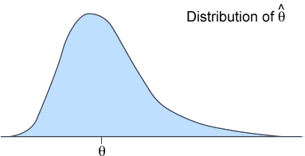
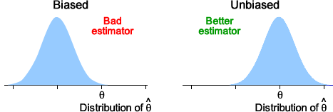
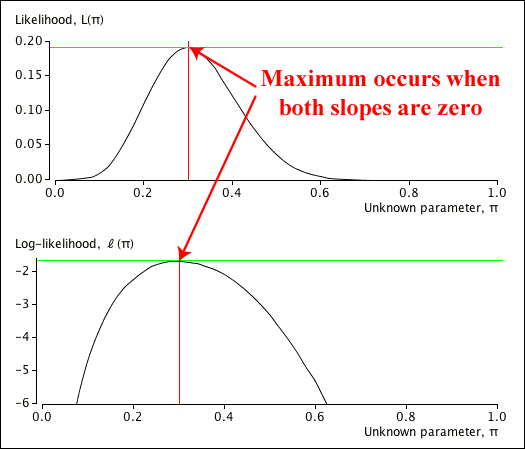
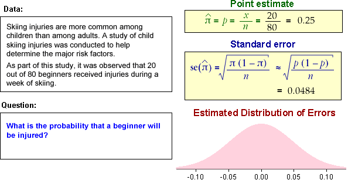

If you don't want to print now,
Finding an appropriate distribution
Thinking about how a measurement is made sometimes suggests that the variable's distribution should belong to a family of standard distributions, such as a uniform, binomial, geometric or negative binomial distribution.
This reasoning may require some assumptions about the process underlying the variable.
Unfortunately, this usually only leads to a family of standard distributions with one or more parameters whose values are unknown, such as the probability of success \(\pi\) in a series of Bernoulli trials.
How can we find the value of any such unknown parameter?
To get information about unknown parameters, we need data whose distribution depends on these parameters. A function of the data is used to estimate each parameter. We start with models involving a single unknown parameter, \(\theta\).
Definition
If \({X_1, X_2, \dots, X_n}\) is a random sample from a distribution whose shape depends on an unknown parameter \(\theta\), then any function of the random sample,
\[ \hat{\theta}(X_1, X_2, \dots, X_n) \]is a random variable and could potentially be used as an estimator of \(\theta\).
Possible estimators are:
Since there are various possible functions of the data that might be used as estimators, what makes a good estimator of a parameter?
Distribution of an estimator
If \({X_1, X_2, \dots, X_n}\) is a random sample from a distribution involving a single unknown parameter \(\theta\), an estimator \( \hat{\theta}(X_1, X_2, \dots, X_n) \) is a function of these \(n\) random variables and also has a distribution. It is often simply written as \( \hat{\theta}\).
The properties of an estimator depend on its distribution. For example, an estimator with a continuous distribution might have the pdf show below.

For \( \hat{\theta}\) to be a good estimator of \(\theta\), its distribution should concentrated near \(\theta\).
Bias
A good estimator of \(\theta\) should have a distribution whose "centre" is close to \(\theta\). This can be summarised by the distance of the estimator's mean from \(\theta\).
Definition
The bias of an estimator \(\hat{\theta}\) of a parameter \(\theta\) is defined to be
\[ \Bias(\hat{\theta}) \;=\; E[\hat{\theta}] - \theta \]If its bias is zero, \(\hat{\theta}\) is called an unbiased estimator of \(\theta\).
Many popular estimators are unbiased.
Sample mean
If \({X_1, X_2, \dots, X_n}\) is a random sample from a distribution with mean \(\mu\), the sample mean, \(\overline{X}\), is an unbiased estimator of the distribution mean, \(\mu\).
(Proved in full version)
A sample variance is also an unbiased estimator of a distribution's variance, \(\sigma^2\), but this is harder to prove.
Sample variance
If \({X_1, X_2, \dots, X_n}\) is a random sample from a distribution with variance \(\sigma^2\), the sample variance,
\[ S^2 = \sum_{i=1}^n {\frac {(X_i - \overline{X})^2} {n-1}} \]is an unbiased estimator of \(\sigma^2\).
(Proved in full version)
Although the sample variance is unbiased, the sample standard deviation is a biased estimator.
Sample standard deviation
The sample standard deviation, \(S\), is a biased estimator of a distribution's standard deviation, \(\sigma\).
(Proved in full version)
A good estimator's distribution should have a mean that is equal to (or at least be close to) the parameter being estimated,

However this is not enough to characterise a good estimator.
A good estimator should also have a distribution with a small standard deviation.
Definition
The standard error of an estimator \(\hat{\theta}\) of a parameter \(\theta\) is defined to be its standard deviation.
The standard error is also the standard deviation of the estimation error,
\[ error \;\; = \;\; \hat{\theta} - \theta \]and this is the reason for its name — it is a 'typical' estimation error.
Question: Active ingredient in medicine
Pharmaceutical companies routinely test their products to ensure that the concentration of active ingredient, \(\mu\), is within tight limits. However the chemical analysis is not precise and repeated measurements of the same specimen differ slightly.
One type of analysis gives estimated concentrations of the active ingredient that are normally distributed with standard deviation \(\sigma = 0.0068\) grams per litre. A product is tested 16 times, giving a sample mean concentration of \(\hat{\mu} = \overline{x} = 0.0724\) grams per litre.
(Solved in full version)
The formula for the standard error often involves unknown parameters, so its exact numerical value cannot be obtained. These parameters are often replaced by estimates in order to get a numerical value for the standard error.
Question: Heat treatment of mangoes
In an experiment to assess the effectiveness of heat-treatment of mangoes as a method of killing fruit fly eggs and larvae, several infested fruit were heat-treated at 44°C. Out of 572 fruit fly eggs in the mangoes, 30 survived, giving an estimate of the probability of survival at this temperature of:
\[ \hat{\pi} = P = \frac {30} {572} = 0.05245 \]What are the bias and standard error of the estimator?
(Solved in full version)
A good estimator should have a small bias and small standard error. These two criteria can be combined with into single value called the estimator's mean squared error.
Definition
The mean squared error of an estimator \(\hat{\theta}\) of a parameter \(\theta\) is
\[ \MSE(\hat{\theta}) = E\left[ (\hat{\theta} - \theta)^2 \right] \]Its relationship to our earlier definitions of bias and standard error is given by the following result.
Mean squared error
The mean squared error of an estimator \(\hat{\theta}\) of \(\theta\) is
\[ \MSE(\hat{\theta}) = \Var(\hat{\theta}) + \Bias(\hat{\theta})^2 \](Proved in full version)
Consistency
When an estimator is based on a random sample of \(n\) values, \(\hat{\theta}(X_1, X_2, \dots, X_n)\), we would like the estimator to becomes closer to the parameter being estimated, \(\theta\), when the sample size increases.
Definition
An estimator \(\hat{\theta}(X_1, X_2, \dots, X_n)\) that is based on a random sample of \(n\) values is said to be a consistent estimator of \(\theta\) if
\[ \hat{\theta}(X_1, X_2, \dots, X_n) \;\; \xrightarrow[n \rightarrow \infty]{} \;\; \theta \]A precise definition of consistency explains what this limit means, but is relatively complex. The concept is that the distribution of \(\hat{\theta}\) becomes more and more concentrated on \(\theta\).
Consistency can usually be proved using the following result.
Consistent estimators
An estimator \(\hat{\theta}(X_1, X_2, \dots, X_n)\) is a consistent estimator of \(\theta\) if the following two conditions hold:
\[ \begin{align} \Var(\hat{\theta}) \;\; &\xrightarrow[n \rightarrow \infty]{} \;\; 0 \\[0.5em] Bias(\hat{\theta}) \;\; &\xrightarrow[n \rightarrow \infty]{} \;\; 0 \end{align} \]Bias and standard error can be used to compare alternative estimators.
Samples from a normal distribution
Consider a random sample of \(n\) values from a normal distribution with known standard deviation,
\[ X \;\; \sim \; \; \NormalDistn(\mu, \;\;\sigma^2 = 0.2^2) \]Since the normal distribution is symmetric, both its mean and median are \(\mu\), so is the sample mean or sample median a better estimator?
\[ \overline{X} \;\; \sim \; \; \NormalDistn\left(\mu, \;\;\sigma_{\overline{X}}^2 = \frac {0.2^2} n \right) \]The sample median, \(\tilde{X}\), has a harder distribution but, in large samples, there is an approximate result,
\[ \tilde{X} \;\; \underset{\text{approx}}{\sim} \; \; \NormalDistn\left(\mu, \;\;\sigma_{\tilde{X}}^2 = \frac {0.2^2} n \times 1.571 \right) \]Both estimators are therefore unbiased, but the standard error of the mean, \(\overline{X}\), is lower than that of the median, \(\tilde{X}\), so the sample mean is the better estimator.
Samples from a skew distribution
On the other hand, consider samples from the following skew distribution.

If the median of this distribution, \(\gamma\), was unknown, the obvious estimator would be the median of a random sample, \(\tilde{X}\).
The distributions of the sample mean and sample median both have similar standard errors. However
\[ E[\overline{X}] \;\; = \; \; \mu \;\;=\;\; 4 \]so the sample mean has a bias of 1.23 when it is used to estimate this distribution's median, whereas the sample median is approximately unbiased. Moreover, the sample mean's bias does not decrease as \(n\) increases, so it is not a consistent estimator.
The sample median would be the better estimator to use to estimate the median of such a skew distribution.
We now introduce a simple method for estimating a parameter \(\theta\).
Definition
If \(\{X_1, X_2, \dots, X_n\}\) is a random sample from a distribution whose mean, \(\mu(\theta)\), depends on an unknown parameter, \(\theta\), the method of moments estimator of \(\theta\) is the solution to the equation
\[ \mu(\theta) = \overline{X} \]We now illustrate this with a simple example.
Estimating a normal distribution's mean (σ known)
Consider a random sample from a normal distribution whose standard deviation, \(\sigma\), is a known value.
\[ X \;\; \sim \; \; \NormalDistn(\mu,\; \sigma=0.6) \]Since the distribution's mean is \(\mu\), the method of moments estimate is
\[ \hat{\mu} = \overline{x} \]
We now give two further estimators that can be found by the method of moments.
Question: Sex ratio of Siberian tigers
The probability of a newborn tiger being male is an unknown parameter, \(\pi\). Assuming that the sexes of tigers in a litter are independently determined, the number of males in a litter of size three will be
\[ X \;\; \sim \; \; \BinomDistn(3, \pi) \]A researcher recorded the numbers of males from a sample of \(n = 207\) such litters, as summarised by the following frequency table.
| Number of males | 0 | 1 | 2 | 3 |
|---|---|---|---|---|
| Frequency | 33 | 66 | 80 | 28 |
What is the method of moments estimate of \(\pi\)?
(Solved in full version)
This is an unbiased estimator, but the method of moments estimators sometimes results in an estimator whose bias is non-zero.
Question: Sample from a geometric distribution
If \(\{X_1, X_2, \dots, X_n\}\) is a random sample from a geometric distribution with probability function
\[ p(x) = \pi (1-\pi)^{x-1} \quad \quad \text{for } x = 1, 2, \dots \]what is the method of moments estimator of \(\pi\)? Is it unbiased?
(Solved in full version)
Alternative to the method of moments
The method of moments often provides a good estimator when there is a single unknown parameter, but another general estimation method called maximum likelihood is far more general. It can be used for models with several unknown parameters and even situations in which the available data are not a random sample.
Likelihood function
The joint probability of \(\{X_1, X_2, \dots, X_n\}\) may involve an unknown parameter, \(\theta\).
\[ p(x_1, x_2, \dots, x_n \;| \; \theta) \]For example, if the variables are a random sample from a \(\GeomDistn(\pi)\) distribution, independence means that the joint probability is
\[ P(X_1=x_1 \textbf{ and } X_2=x_2 \textbf{ and } \dots \textbf{ and } X_n=x_n) = \prod_{i=1}^n {\pi (1-\pi)^{x_i-1}} \]The likelihood function is defined from this.
Definition
If random variables \(\{X_1, X_2, \dots, X_n\}\) have joint probability
\[ p(x_1, x_2, \dots, x_n \;| \; \theta) \]then the function
\[ L(\theta \; | \; x_1, x_2, \dots, x_n) \;=\; p(x_1, x_2, \dots, x_n \;| \; \theta) \]is called the likelihood function of \(\theta\).
The likelihood function tells you the probability of getting the data that were observed, for different values of the parameter, \(\theta\). More informally,
\(L(\theta) = Prob(\text{getting the data that were observed})\) if the parameter value was really \(\theta\).
We now give a simple example.
Binomial random variable
If \(X\) is the number of successes in \(n=20\) independent trials, each with probability \(\pi\) of success, its probability function is
\[ p(x \; | \; \pi) = {{20} \choose x} \pi^x(1-\pi)^{20-x} \quad \quad \text{for } x=0, 1, \dots, 20 \]If we observed \(x=6\) successes, this would have probability
\[ p(6 \; | \; \pi) = {{20} \choose 6} \pi^6(1-\pi)^{14} = (38,760) \times \pi^6(1-\pi)^{14} \]The likelihood function treats this as a function of \(\pi\),
\[ L(\pi) \;=\; p(6 \; | \; \pi) \;=\; (38,760) \times \pi^6(1-\pi)^{14} \]The likelihood function gives the probability of getting the data that we observed (6 successes) for different values of \(\pi\). For example, if \(\pi = 0.4\), the probability of observing \(x = 6\) would be 0.124.

From the likelihood function we could also find:
Since there would be such a low probability of observing our actual data if \(\pi\) was 0.1, this throws some doubt on whether this would be the correct value of the parameter \(\pi\).
Maximum likelihood estimate
The likelihood function, \(L(\theta \; | \; x_1, x_2, \dots, x_n) = p(x_1, x_2, \dots, x_n \;| \; \theta)\), gives the probability of getting the data that were recorded for different values of the unknown parameter \(\theta\). A value of \(\theta\) that gives the observed data high probability is more likely to be correct than one that would make the observed data unlikely.
Definition
The maximum likelihood estimate of a parameter \(\theta\) is the value that maximises the likelihood function,
\[ L(\theta \; | \; x_1, x_2, \dots, x_n) = p(x_1, x_2, \dots, x_n \;| \; \theta) \]Finding a maximum likelihood estimate (MLE) therefore involves maximising a function of \(\theta\). This is usually a "turning point" of the likelihood function.
Finding the maximum likelihood estimate
The maximum likelihood estimate of a parameter \(\theta\) can normally be obtained as a solution to the equation
\[ \frac {d\; L(\theta \; | \; x_1, x_2, \dots, x_n)} {d\; \theta} \;\; = \;\; 0 \]It is often easier mathematically to maximise the logarithm of the likelihood function rather than the likelihood function itself.
Maximising the log-likelihood
Writing
\[ \ell(\theta) \;=\; \log L(\theta) \]the maximum likelihood estimate of a parameter \(\theta\) can normally be found by solving the equation
\[ \frac {d\; \log L(\theta \; | \; x_1, x_2, \dots, x_n)} {d\; \theta} \;\; = \;\; \ell'(\theta) \;\; = \;\; 0 \](Proved in full version)
We will now give a simple example.
A simple binomial example
Consider a random variable \(X\) that is the number of successes in \(n=20\) independent trials, each of which has probability \(\pi\) of success. If the experiment resulted in \(x=6\) successes, the likelihood function would be
\[ L(\pi) = {{20} \choose 6} \pi^6(1-\pi)^{20-6} \;\; = \;\;38,760 \; \times \pi^6(1-\pi)^{14} \]Instead of differentiating \(L(\theta)\), it is easier to differentiate the log-likelihood to find the maximum likelihood estimate,
\[ \ell(\pi) \;\; = \;\; \log L(\pi) \;\; = \;\; 6 \log(\pi) + 14 \log(1 - \pi) + K\]where \(K\) is a constant that does not depend on \(\pi\). We solve
\[ \frac {d \; \ell(\pi)} {d\; \pi} \;\; = \;\; \frac 6 {\pi} - \frac {14} {1 - \pi} \;\; = \;\; 0 \] \[ 6(1-\pi) = 14\pi \] \[ 6 = 20\pi \]The maximum likelihood estimate of \(\pi\) is therefore \( \hat {\pi} = \frac 6 {20} \), the sample proportion of successes.
The diagram below shows both the likelihood function and the log-likelihood. It illustrates the fact that both functions have their maximum at the same value of \(\pi\).

Generalising to a binomial experiment in which \(x\) successes are observed in \(n\) trials,
\[ \ell(\pi) \; = \; \log L(\pi) \; = \; x \log(\pi) + (n-x) \log(1 - \pi) + K(n, x) \] \[ \frac {d \; \ell(\pi)} {d\; \pi} \; = \; \frac x {\pi} - \frac {n-x} {1 - \pi} \; = \; 0 \]which can be solved to give
\[ \hat {\pi} \;=\; \frac x n \]Note that we are using natural logarithms (base-e) here, not logarithms to the base 10.
Random sample
If \(\{x_1, x_2, \dots, x_n\}\) is a random sample from a distribution with probability function \(p(x\;|\;\theta)\), then
\[ L(\theta \;|\;x_1, x_2, \dots, x_n) = \prod_{i=1}^n p(x_i \;|\; \theta) \]so the log-likelihood can be written as
\[ \ell(\theta) = \sum_{i=1}^n \log\left(p(x_i \;|\; \theta)\right) \]In the next two examples, maximum likelihood estimates must be found from random samples.
Question: Sex ratio of Siberian tigers
The probability of a newborn tiger being male is an unknown parameter, \(\pi\). A researcher recorded the number of males in a sample of \(n = 207\) litters, and these values are summarised in the following frequency table.
| Number of males | 0 | 1 | 2 | 3 |
|---|---|---|---|---|
| Frequency | 33 | 66 | 80 | 28 |
If it is assumed that the sexes of all tigers in a litter are independently determined, what is the maximum likelihood estimate of \(\pi\)?
(Solved in full version)
In the binomial example (and many others), the maximum likelihood and method of moments estimators are equal. However for some other models, they differ.
Question: Sample from a geometric distribution
If \(\{X_1, X_2, \dots, X_n\}\) is a random sample from a geometric distribution with probability function
\[ p(x) = \pi (1-\pi)^{x-1} \quad \quad \text{for } x = 1, 2, \dots \]what is the maximum likelihood estimate of \(\pi\)?
(Solved in full version)
The method is now illustrated with a numerical example.
Illustration
Consider a data set {1, 1, 1, 1, 2, 2, 4} which is assumed to be a random sample from a geometric distribution,
\[ X \;\; \sim \; \; \GeomDistn(\pi) \]The bar chart below shows geometric probabilities when \(\pi = 0.4\). The likelihood is the product of these probabilities for all the data values — i.e. with one term for each cross in the diagram. The log-likelihood is the logarithm of this.

Changing \(\pi\) to 0.8 results in the geometric probabilities below. Although the probabilities are higher for the four values that are "1", the probability of getting the value "4" is now very small. As a result, the product of the probabilities is lower than it might be and the likelihood is not maximised.

The value \(\pi = 0.583\) is a compromise that still has fairly high probabilities for the four 1's but has a larger probability of getting a 4 — this is the value that maximises the likelihood.
Maximum likelihood estimators have very good large-sample properties.
These strictly require certain "regularity conditions" to be satisfied. We will avoid them in this e-book — they almost always hold.
The following results apply to the maximum likelihood estimator, \(\hat {\theta}\) of a parameter \(\theta\), based on a random sample of size \(n\) when \(n \to \infty\) — i.e. its asymptotic properties.
Bias
It is asymptotically unbiased,
\[ E[\hat {\theta}] \;\; \xrightarrow[n \rightarrow \infty]{} \;\; \theta \]Variance and consistency
It asymptotically has variance,
\[ \Var(\hat {\theta}) \;\; \xrightarrow[n \rightarrow \infty]{} \;\; - \frac 1 {n \times E\left[\large\frac {d^2 \log\left(p(X \;|\; \theta)\right)} {d\theta^2} \right]} \]Since this tends to zero as \(n \rightarrow \infty\) and the bias is asymptotically zero, a maximum likelihood estimator is also consistent.
Asymptotic normality
It asymptotically has a normal distribution,
\[ \hat {\theta} \;\; \xrightarrow[n \rightarrow \infty]{} \;\; \text{a normal distribution} \]We now express these three properties together in a slightly more formal way.
All together
If \(\hat {\theta} \) is the maximum likelihood estimator of a parameter, \(\theta\), based on a random sample of size \(n\),
\[ (\hat {\theta} - \theta) \times \sqrt {-n \times E\left[\frac {d^2\; \log\left(p(X \;|\; \theta)\right)} {d\;\theta^2} \right]} \;\; \xrightarrow[n \rightarrow \infty]{} \;\; \NormalDistn(0, 1) \]A final result states that a maximum likelihood estimator cannot be beaten in large samples.
Asymptotically "best"
Other estimators of a parameter, \(\theta\), may have lower mean squared errors in small samples, but none have lower mean squared error than the maximum likelihood estimator if the sample size is large enough.
Practical problems
There are two practical problems with the approximate variance formula for \(\hat {\theta} \),
\[ \Var(\hat {\theta})\; \approx \;- \dfrac 1 {n \times E\left[\frac {\large d^2\; \log\left(p(X \;|\; \theta)\right)} {\large d\;\theta^2} \right]} \]Avoiding the expected value
A numerical value for the approximate variance of \(\hat {\theta}\) can be found with a further approximation,
\[ \Var(\hat {\theta})\; \approx \;- \frac 1 {\ell''(\hat {\theta})} \](Justified in full version)
Its square root provides us with a numerical value for the standard error of the maximum likelihood estimator,
\[ \se(\hat {\theta}) \;\;\approx\;\; \sqrt {- \frac 1 {\ell''(\hat {\theta})}} \]This formula lets us find an approximate numerical value for the standard error of almost any maximum likelihood estimator — even when based on models in which the data are not a simple random sample.
The following questions relate to the maximum likelihood estimators for the unknown parameters in two standard distributions.
Question: Single binomial value
In a series of \(n\) independent success/failure trials with probability \(\pi\) of success, \(x\) successes were observed. What is the maximum likelihood estimator of \(\pi\) and what are its bias and standard error?
Question: Geometric random sample
If \(\{x_1, x_2, \dots, x_n\}\) is a random sample from a geometric distribution with parameter \(\pi\), what is the maximum likelihood estimator of \(\pi\) and what are its bias and standard error?
(Both solved in full version)
The maximum likelihood estimate of a parameter \(\theta\) is usually a value that satisfies the equation
\[ \ell'(\theta) \;\; = \;\; 0 \]where \(\ell(\theta)\) is the log-likelihood function. Sometimes this equation cannot be solved algebraically, so an iterative numerical method is required to obtain the maximum likelihood estimate.
One way to solve an equation numerically is called the Newton Raphson algorithm. Consider an equation
\[ g(\theta) \;\; = \;\; 0 \]Newton Raphson algorithm
Starting at an initial guess of the solution, \(\theta_0\), successive values
\[ \theta_{i+1} \;\; = \;\; \theta_i - \frac {g(\theta_i)} { g'(\theta_i)} \qquad \text{for } i=0,\dots\]are called the Newton Raphson algorithm. If it converges, it is to a solution of the equation \(g(\theta) = 0\).
This is justified by a Taylor series expansion of \(g(\theta)\) around \(\theta_0\).
Applying the algorithm to maximum likelihood
To apply it to maximum likelihood, we use the function \(g(\theta) = \ell'(\theta)\). The Newton Raphson algorithm can therefore be expressed as
\[ \theta_{i+1} \;\; = \;\; \theta_i - \frac {\ell'(\theta_i)} { \ell''(\theta_i)}\]This usually converges to the maximum likelihood estimate, provided the initial guess, \(\theta_0\) is not too far from the correct value. The algorithm may need to be used from various starting values until one is found for which the algorithm converges.
To illustrate the use of the Newton-Raphson algorithm to find maximum likelihood estimates, we will examine another standard distribution that is occasionally encountered, the log-series distribution.
Definition
A discrete random variable \(X\) is said to have a log-series distribution if its probability function is
\[ p(x) \;=\; \frac {-1} {\log(1-\theta)} \times \frac {\theta^x} x \quad\quad \text{for } x=1, 2, \dots \]where \(0 \lt \theta \lt 1\).
Its shape to the geometric distribution, but has greater spread with a higher probability at one and a longer tail.
Maximum likelihood
If a random sample \({x_1, x_2, \dots, x_n}\) is collected from this distribution, what is the maximum likelihood estimate of \(\theta\)? The logarithm of the probability function is
\[ \log \left(p(x)\right) \;=\; x \log(\theta) - \log \left(- \log(1 - \theta) \right) - \log(x) \]so the likelihood function is
\[ \ell(\theta) \;=\; \sum_{i=1}^n \log \left(p(x_i)\right) \;=\; {\sum x_i} \log(\theta) - n \times \log \left( -\log(1 - \theta) \right) + K \]where \(K\) is a constant whose value does not depend on \(\theta\). The MLE is the solution of
\[ \ell'(\theta) \;=\; \frac {\sum x_i} {\theta} + \frac n {(1 - \theta)\log(1 - \theta)} \;=\; 0 \]Unfortunately this equation cannot be rearranged to obtain an explicit formula for \(\theta\), so a numerical method must be used to find the maximum likelihood estimate. The Newton Raphson algorithm also requires the second derivative of the log-likelihood,
\[ \ell''(\theta) \;=\; -\frac {\sum x_i} {\theta^2} + \frac {n \left(1 + \log(1 - \theta) \right)} {(1 - \theta)^2\log^2(1 - \theta)} \]The algorithm uses these derivatives iteratively to refine an initial estimate, \(\theta_0\),
\[ \theta_{i+1} \;\; = \;\; \theta_i - \frac {\ell'(\theta_i)} { \ell''(\theta_i)}\]Numerical illustration
Consider the following data set that is assumed to arise from a log-series distribution.
| 3 | 5 | 1 | 4 | 8 | 10 | 2 | 1 | 1 | 2 |
| 1 | 8 | 1 | 6 | 13 | 1 | 6 | 2 | 1 | 3 |
| 1 | 1 | 1 | 2 | 1 | 6 | 1 | 1 | 1 | 1 |
The derivatives of the log-likelihood involve the values \(n = 30\) and \(\sum x = 95\). Iterations of the Newton-Raphson algorithm from an initial guess at the value of \(\theta = 0.7\) are:
| Iteration, i | \(\theta_i\) | \(\ell'(\theta_i)\) | \(\ell''(\theta_i)\) |
|---|---|---|---|
| 0 | 0.7000 | 52.656 | -240.78 |
| 1 | 0.9187 | -43.613 | -1200.14 |
| 2 | 0.8823 | -11.484 | -661.52 |
| 3 | 0.8650 | -1.139 | -538.41 |
| 4 | 0.8629 | -0.013 | -526.41 |
| 5 | 0.8628 | -0.000 | -526.28 |
| 6 | 0.8628 | -0.000 | -526.28 |
| 7 | 0.8628 |
It converges quickly to \(\hat {\theta} = 0.8628\).
The diagram below illustrates the first iteration of the algorithm; it approximates the shape of the log-likelihood using a quadratic curve with the same value, slope and curvature as the log-likelihood at \(\theta = 0.7\). The next iteration is the value of \(\theta\) that maximises this quadratic.

When you get closer to the MLE, the quadratic's shape becomes closer to the actual log-likelihood, so the iterations approach the MLE more quickly. The diagram below illustrates this from a starting value of 0.88.
The asymptotic formula for the standard error is
\[ \se(\hat {\theta}) \;\;\approx\;\; \sqrt {- \frac 1 {\ell''(\hat {\theta})}} \]The second derivative of the log-likelihood is found in the last iteration of the Newton Raphson algorithm.
Standard error for log-series distribution
The iterations of the Newton-Raphson algorithm for finding the MLE of the log-series distribution's parameter, \(\theta\), to the data on the previous page from an initial guess, \(\theta_0 = 0.7\) were:
| Iteration, i | \(\theta_i\) | \(\ell'(\theta_i)\) | \(\ell''(\theta_i)\) |
|---|---|---|---|
| 0 | 0.7000 | 52.656 | -240.78 |
| 1 | 0.9187 | -43.613 | -1200.14 |
| : | : | : | : |
| 5 | 0.8628 | -0.000 | -526.28 |
| 6 | 0.8628 | -0.000 | -526.28 |
| 7 | 0.8628 |
The second derivative of the log-likelihood converges to \(\ell''(\hat{\theta}) = -526.28\). The approximate standard error of the estimate is therefore
\[ \se(\hat {\theta}) \;\;\approx\;\; \sqrt {- \frac 1 {\ell''(\hat {\theta})}} \;\;=\;\; \sqrt {\frac 1 {526.28}} \;\;=\;\; 0.0436 \]Describing accuracy with an interval estimate
Reporting a single value as a parameter estimate (a point estimate) does not convey any information about the estimator's accuracy — i.e. the likely size of the estimation error.
It is better to give an interval of values within which we are confident that the parameter will lie — an interval estimate.
Will an interval estimate include θ?
If an interval estimate is too narrow, there will be very little chance of it containing the true parameter value, but intervals that are too wide do not convey much information.

We need to find a way to quantify our confidence that any particular interval estimate will include the parameter being estimated.
Error distribution
Most parameter estimates are unbiased (or at least asymptotically unbiased) and a formula for their standard deviation (or an approximation) can be found. In particular, from the asymptotic properties of maximum likelihood estimators,
\[ \begin{align} E[\hat{\theta}] \;\; &\approx \; \; \theta \\ \se(\hat {\theta}) \;\;&\approx\;\; \sqrt {- \frac 1 {\ell''(\hat {\theta})}} \end{align} \]Since MLEs are also asymptotically normally distributed, we can find an approximate distribution for the estimation error,
\[ error \;\;=\;\; \hat {\theta} - \theta \;\; \sim \;\; \NormalDistn\left(\mu=0, \;\;\sigma=\se(\hat{\theta})\right) \]Binomial example
In a series of independent Bernoulli trials with probability \(\pi\) of success, the maximum likelihood estimator of \(\pi\) is the proportion of successes. From the binomial distribution, we have exact formulae for its mean and standard deviation (standard error) and approximate normality in large samples,
\[ \hat {\pi} \;\; \sim \;\; \NormalDistn\left(\pi, \;\;\sigma=\sqrt{\frac {\pi(1-\pi)} n} \right) \]In the example below, the standard error is used to sketch the approximate distribution of the sampling errors.

From this error distribution, we can conclude that:
Our estimate of the proportion of beginners getting injured during a week of skiing, 0.25, is unlikely to be more than 0.1 from the similar proportion of skiers in general, \(\pi\).
95% confidence interval
Assuming that the error distribution is normal (or approximately so), we can use the fact that 95% of any normal distribution is between 1.96 standard deviations of the mean.
We can therefore write
\[ \begin{align} P\left(-1.96 \times \se(\hat {\theta}) \;\;\lt\;\; error \;\;\lt\;\; 1.96 \times \se(\hat {\theta})\right) \;\;&\approx\;\; 0.95 \\ P\left(\hat{\theta}-1.96 \times \se(\hat {\theta}) \;\;\lt\;\; \theta \;\;\lt\;\; \hat{\theta}+1.96 \times \se(\hat {\theta})\right) \;\;&\approx\;\; 0.95 \end{align} \]We call the interval
\[ \hat{\theta}-1.96 \times \se(\hat {\theta}) \quad \text{ to } \quad \hat{\theta}+1.96 \times \se(\hat {\theta}) \]a 95% confidence interval for \(\theta\) and we have 95% confidence that it will include the actual value of the parameter.
Other confidence levels
90% of values from a normal distribution are within 1.645 standard deviations of the distribution's mean, so

This leads to a 90% confidence interval,
\[ \hat{\theta}-1.645 \times \se(\hat {\theta}) \quad \text{ to } \quad \hat{\theta}+1.645 \times \se(\hat {\theta}) \]We say that we are 90% confident that an interval that is calculated in this way will include the true parameter value, \(\theta\).
Binomial example

In the next example, there is no exact formula for the standard error of the estimator.
Question: Geometric random sample
If \(\{x_1, x_2, \dots, x_n\}\) is a random sample from a geometric distribution with parameter \(\pi\), find a large-sample 90% confidence interval for the parameter \(\pi\).
(Solved in full version)
In the next example, the Newton-Raphson algorithm should be used to obtain the maximum likelihood estimate and its standard error.
Question: Log-series distribution
The following data set that is assumed to arise from a log-series distribution with probability function
\[ p(x) \;=\; \frac {-1} {\log(1-\theta)} \times \frac {\theta^x} x \quad\quad \text{for } x=1, 2, \dots \]| 3 | 5 | 1 | 4 | 8 | 10 | 2 | 1 | 1 | 2 |
| 1 | 8 | 1 | 6 | 13 | 1 | 6 | 2 | 1 | 3 |
| 1 | 1 | 1 | 2 | 1 | 6 | 1 | 1 | 1 | 1 |
Find a large-sample 95% confidence interval for the parameter \(\theta\).
(Solved in full version)
A confidence interval does not always "work" — it may not actually include the unknown parameter value. A 95% confidence interval might be
\[ 0.7773 \;\;\lt\;\; \theta \;\;\lt\;\; 0.9483 \]but the value of \(\theta\) is unknown and may not actually lie within this interval. The best we can say is that we are 95% confident that \(\theta\) will be between these two values.
If confidence intervals were found from other similar random samples, 95% of them would include \(\theta\).
The notion of a confidence level therefore more a characteristic of the method of finding the confidence interval, than a characteristic of the specific confidence interval from a single data set.
Simulation
The simulation below took 100 random samples of size n = 200 from a population with π = 0.6. Most of the confidence intervals included π = 0.6, but some did not. If the simulation was repeated many more times, the proportion including 0.6 would be close to 0.95.

In practice, you only have a single sample and a single confidence interval, but we have "95% confidence" that it will include the true (and usually unknown) value of π.